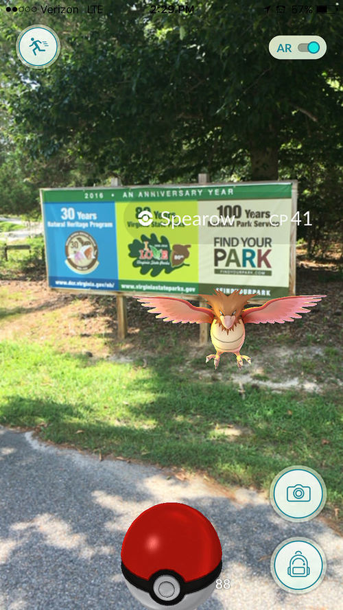

Pokémon Go For Good & Pokémon Go Home!

Two different Pokémon related events here: POKEMON GO FOR GOOD – Ampersand Projects Thursday 25 August, 6-8pm at Eastside Projects Pokemon Go is a free-to-play, location-based augmented reality game which has quickly become a global phenomenon. It has been downloaded by more than 100 million people worldwide and has been credited with popularising augmented reality gaming, as … [Read more…]